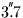
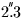
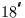
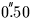
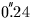
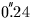

| DATE | D | TDB (loosely ET) as a Modified Julian Date (JD-2400000.5) |
|---|
| PV | D(6) | Moon |
|---|
 and 83 mas/hour in longitude,
 arcsec and 48 mas/hour in latitude,
11 km and 81 mm/s in distance.
The maximum errors over the same interval are
 and
 /hour in longitude,
 and
 /hour in latitude,
40 km and 0.29 m/s in distance.
and
 /hour in latitude,
40 km and 0.29 m/s in distance.
SLALIB --- Positional Astronomy Library